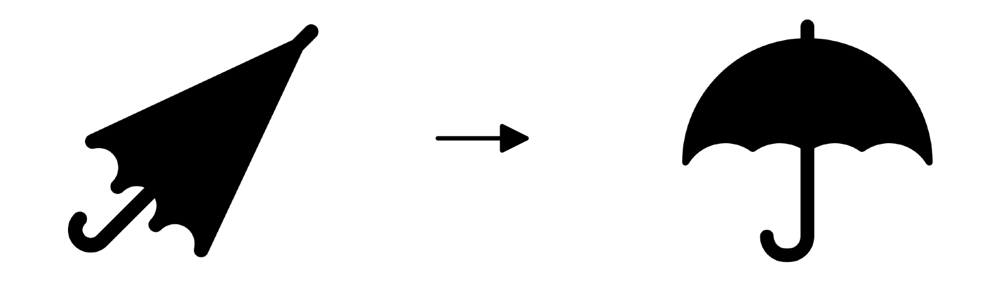
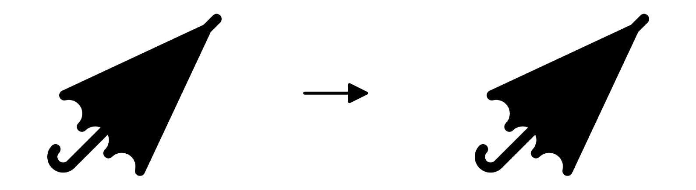

<!DOCTYPE html>
<html>
<head>
  <meta charset="UTF-8">
  <meta name="viewport" content="width=device-width, initial-scale=1.0">
  <title>Experiment 2</title>
  <!-- Load JsPsych -->
  <script src="https://unpkg.com/jspsych@8.3.0"></script>
  <script src="https://unpkg.com/@jspsych/plugin-instructions@2.1.0"></script>
  <script src="https://unpkg.com/@jspsych/plugin-html-keyboard-response@2.1.0"></script>
  <script src="https://unpkg.com/@jspsych/plugin-html-button-response@2.1.0"></script>
  <script src="https://unpkg.com/@jspsych/plugin-preload@2.1.0"></script>
  <script src="https://unpkg.com/@jspsych-contrib/plugin-pipe"></script>
  
  <!-- Load Stimuli -->
  <script src="stims_exp2.js"></script>

  <link href="https://unpkg.com/jspsych@8.3.0/css/jspsych.css" rel="stylesheet" type="text/css">
  
  <!-- Load Font -->
  <link href="https://fonts.googleapis.com/css2?family=Noto+Sans+KR:wght@400;500;600;700&display=swap" rel="stylesheet">
  
  <style>
    /* General page */
    body,
    .jspsych-content,
    .jspsych-content-wrapper {
      font-family: 'Noto Sans KR', sans-serif;
    }

    body {
      background-color: #f4f6f9;
      color: #333;
      margin: 0;
      padding: 0;
    }

    .jspsych-content-wrapper {
      max-width: 1000px;
      margin: 50px auto;
      padding: 20px 40px;
      background: white;
      border-radius: 12px;
      box-shadow:
        0 0 10px
        rgba(0, 0, 0, 0.1);
      align-items: flex-start;
    }

    h1,
    h2,
    h3 {
      color: #2c3e50;
    }

    p {
      font-size: 18px;
      line-height: 1.6;
    }

    /* jsPsych buttons */
    .jspsych-btn {
      font-size: 14px;
      padding: 10px 20px;
      margin: 10px;
      border-radius: 8px;
      background-color:
        #64748b;
      color: white;
      border: none;
      cursor: pointer;
    }

    .jspsych-btn:hover {
      background-color:#475569;
    }

    /* Consent */
    .jspsych-content .consent p {
      font-size: 16px;
      line-height: 1.4;
      text-align: justify;
    }

    .jspsych-content.consent h3 {
      font-size: 18px;
      line-height: 1.4;
    }

  /* Instructions */
    .content {
      margin-top: 20px;
    }

    .example-box {
      background:  paleturquoise;
      padding: 12px 12px;
      border-radius: 12px;
      text-align: center;
    }

    .jspsych-instructions-nav {
      margin-top: 30px;
      text-align: center;
    }

    .inst-box {
      background-color: lemonchiffon;
      border-radius: 12px;
      padding: 18px;
    }

    .instruction-example-image {
      width: 100%;
      max-width: 400px;
      height: auto;
      display: block;
      margin:
        20px auto;
    }

  /* Start screen */
    .begin-box {
      background-color: #e0f2fe;
      padding: 30px;
      border-radius: 12px;
      text-align: center;
    }

    .begin-box p {
      font-size: 22px;
      font-weight: 500;
    }

    /* ============================================================
       EXPERIMENTAL TRIALS
    ============================================================ */

    :root {
      --stimulus-width:
        650px;
    }


    .trial-card {

      max-width: 900px;

      margin: 0 auto;

      text-align: center;
    }


    .trial-label {

      font-size: 16px;

      font-weight: 600;

      color: #64748b;

      margin-bottom: 8px;
    }


    .sentence-box {

      background-color:
        #f8fafc;

      padding:
        20px 25px;

      border-radius: 10px;

      margin-bottom: 15px;
    }


    .target-sentence,
    .probe-sentence {

      font-size: 22px;

      font-weight: 500;

      margin: 0;

      line-height: 1.6;
    }


    .trial-question {

      font-size: 19px;

      font-weight: 500;

      margin-top: 30px;
    }


    .picture-section {

      display: flex;

      flex-direction: column;

      align-items: center;

      gap: 5px;

      margin-bottom: 10px;
    }


    .picture-description {

      font-size: 18px;

      font-weight: 500;

      margin:
        10px 0
        15px 0;
    }


    .context-block,
    .critical-block {

      width:
        var(--stimulus-width);

      max-width: 100%;

      margin-left: auto;

      margin-right: auto;

      text-align: center;
    }


    .critical-block {
      margin-top: 25px;
    }


    .experiment-image {

      width: 100%;

      max-width:
        var(--stimulus-width);

      height: auto;

      display: block;

      margin:
        0 auto;
    }


    .stage1-context {
      transform:
        translateY(-172px);
    }


    .target-box {
      margin-top: 25px;
    }


    .context-stage
    .jspsych-btn {

      transform:
        translateY(100px);
    }


    /* ============================================================
       SAVING
    ============================================================ */

    .saving-box {

      background-color:
        #ecfdf5;

      padding: 30px;

      border-radius: 12px;

      text-align: center;
    }


    .saving-box h2 {

      margin-top: 0;

      color:
        #047857;
    }


    /* ============================================================
       COMPLETION
    ============================================================ */

    .completion-box {

      background-color:
        #f0fdf4;

      padding: 30px;

      border-radius: 12px;

      text-align: center;
    }


    .completion-box h2 {

      margin-top: 0;

      color:
        #15803d;
    }


    /* ============================================================
       PROGRESS BAR
    ============================================================ */

    #jspsych-progressbar-container {

      background-color:
        #f3f7f4;

      padding:
        10px 0;

      margin-bottom: 20px;
    }


    #jspsych-progressbar-outer {

      width: 90%;

      margin:
        0 auto;

      height: 12px;

      background-color:
        #dfe9e2;

      border-radius: 8px;

      overflow: hidden;
    }


    #jspsych-progressbar-inner {

      height: 100%;

      background:
        linear-gradient(
          90deg,
          #b7d9c2 0%,
          #74b68b 55%,
          #3f8f5f 100%
        );

      transition:
        width 0.4s ease;

      border-radius: 8px;

      box-shadow:
        inset 0 1px 2px
        rgba(
          255,
          255,
          255,
          0.45
        );
    }

  </style>

</head>
<body>
  <script>
    // Initialize jsPsych
    const jsPsych =
      initJsPsych({
        show_progress_bar: true,
        message_progress_bar: ""
      });

    const DATAPIPE_EXPERIMENT_ID = "REPLACE_WITH_EXP2_ID";

    const subject_id =  jsPsych.randomization.randomID(10);

    // Counterbalancing
    // 4 stimulus lists × 2 Yes/No button orders = 8 counterbalancing cells

    const assignment_cell =
      Math.floor(
        Math.random() * 8
      );

    // Assign one of the 4 experimental lists
    const list_number =
      (assignment_cell % 4) + 1;

    // Counterbalance Yes / No button order
    const response_buttons =
      assignment_cell < 4
        ? ["예", "아니요"]
        : ["아니요", "예"];

    //Store each trial in a timeline 
    const timeline = [];

    // Target conditions
    const experimental_conditions = [
      {qp_position: "object", 
        context_condition: "ES"
      },
      {qp_position: "object",
        context_condition: "EF"
      },
      {qp_position: "subject",
        context_condition: "ES"
      },
      {qp_position: "subject",
        context_condition: "EF"
      }
    ];

    // Select targets for this list
    const selected_targets =
      window.EXP2_STIMULI
        .filter(stim => {
          const base_condition = (stim.item - 1) % 4;
          const condition_index = (base_condition + (list_number - 1)) % 4;
          const required_condition =
            experimental_conditions[
              condition_index
            ];
          return (
            stim.qp_position ===
              required_condition
                .qp_position
            &&
            stim.context_condition ===
              required_condition
                .context_condition
          );
        });
    
    // Select 6 fillers
    const selected_fillers =
      makeExp2Fillers();

    //Combine targets & fillers, with no consecutive fillers
    // Randomize targets
    const randomized_targets =
      jsPsych.randomization.shuffle(
        selected_targets
      );
    // Randomize fillers
    const randomized_fillers =
      jsPsych.randomization.shuffle(
        selected_fillers
      );

    // 13 possible gaps around 12 targets: Put each filler into a different gap.
    const possible_gaps =
      Array.from(
        {length: randomized_targets.length + 1},
        (_, index) => index
      );

    const selected_gaps =
      jsPsych.randomization
        .sampleWithoutReplacement(
          possible_gaps,
          randomized_fillers.length
        );

    // Associate one filler with each selected gap
    const gap_fillers = {};
    selected_gaps.forEach(
      (gap, index) => {
        gap_fillers[gap] =
          randomized_fillers[index];
      }
    );

    // Build final sequence
    const experimental_items = [];
    for (
      let i = 0;
      i <= randomized_targets.length;
      i++
    ) {
    // Add filler if this gap was selected
      if (
        gap_fillers[i] !== undefined
      ) {
        experimental_items.push(
          gap_fillers[i]
        );
      }
    // Add next target
      if (
        i < randomized_targets.length
      ) {
        experimental_items.push(
          randomized_targets[i]
        );
      }
    }

    // Preload images
    const image_files = [
      ...new Set([
        // Experimental items
        ...experimental_items
          .flatMap(item => [
            item.context_image,
            item.critical_image
          ]),
        // Instruction images
        "ex/umbrella_change.png",
        "ex/umbrella_no_change.png"
      ])
    ];

    timeline.push({
      type:  jsPsychPreload,
      images: image_files
    });

    // Consent
    const consent = {
      type: jsPsychHtmlButtonResponse,
      record_data: false,
      stimulus: `
        <div class="consent">
          <h2 style="text-align:center;">
            연구 참여 안내 및 동의
          </h2>

          <h3 style="text-align:center;">
            언어 이해 및 해석에 관한 행동 연구
          </h3>

          <p style="text-align: center;">
            <strong>연구 개요</strong>
          </p>

          <p>
            귀하는 언어와 의사소통에 관한 연구에 참여하도록 요청받았습니다.
            본 연구의 목적은 사람들이 다양한 맥락에서 문장을 어떻게 사용하고 해석하는지 이해하는 것입니다.
            귀하는 간단한 그림을 보고, 제시된 문장이 그림을 자연스럽게 설명하는지 판단하게 됩니다.
            본 연구 참여는 자발적이며, 언제든지 연구 참여를 중단하실 수 있습니다. 연구에 참여하지 않거나 참여를 중단하더라도 어떠한 불이익도 없습니다.
          </p>

          <p style="text-align: center;">
            <strong>소요 시간</strong>
          </p>

          <p>
            연구 참여에는 약 15분이 소요될 예정입니다.
          </p>

          <p style="text-align: center;">
            <strong>참여 보상</strong>
          </p>

          <p>
            연구 참여에 대한 보상으로 5,000원 상당의 커피 기프티콘을 지급해 드립니다. 실험 종료 후, 보상 지급을 위해 연락처 정보를 수집할 예정입니다. 
            연락처 정보는 응답과 별도로 수집되며, 기프티콘 발송 이외의 용도로 사용되지 않습니다. 연락처 정보는 보상 지급이 완료된 후 폐기됩니다.
          </p>

          <p style="text-align: center;">
            <strong>개인정보 및 비밀유지</strong>
          </p>

          <p>
            본 연구 참여로 인해 발생할 수 있는 일상생활에서 일반적으로 경험하는 수준을 넘어서는 알려진 위험은 없습니다.
            귀하의 응답 내용은 외부에 공개되지 않으며, 성별 나이 등의 개인정보는 식별 불가능하게 처리되어 관련 규정에 의해 보호됩니다.
            본 연구 결과를 바탕으로 작성되는 보고서나 논문 등의 자료에는 귀하를 식별할 수 있는 정보가 포함되지 않습니다.
          </p>

          <p style="text-align: center;">
            <strong>연구 관련 문의:</strong>
          </p>

          <p>
            연구 내용이나 절차, 연구 참여로 인한 위험 및 이점에 대한 질문, 혹은 연구와 관련된 우려 또는 불만 사항이 있는 경우 연구책임자인 홍준선 (junseonh@stanford.edu, 1-650-723-4284)에게 연락하시기 바랍니다. 
          </p>
          
          <h3>
            연구 참여에 동의하시는 경우, 아래의 “동의하고 계속”을 클릭해 주십시오.
          </h3>
       </div>
      `,
      choices: ["동의하고 계속"],
    };

    timeline.push(consent);

    // Instructions
    timeline.push({
      type: jsPsychInstructions,
      pages: [
        `
        <div class="instruction-box">
          <h2>
            실험에 참여해 주셔서 감사합니다!
          </h2>
          <div class="instruction-highlight">
            <p>
              이 실험에서는 그림을 본 후 주어진 문장에 대해 질문에 답해 주시면 됩니다.
            </p>
          </div>
          <div class="instruction-highlight">
            <p>
              그림은 화살표를 사이에 두고 두 부분으로 나누어져 있습니다.
              화살표의 왼쪽은 처음 상태를, 오른쪽은 시간이 조금 지난 후의 상태를 나타냅니다.
            </p>
            <p>
              예를 들어, 아래 그림은 처음에는 우산이 접혀 있었지만 이후에는 우산이 펼쳐진 상황을 나타냅니다.
            </p>
            
            <p>
              반면 아래 그림은  처음과 이후의 상태가 동일하여, 아무런 변화 없이 우산이 그대로 접혀 있는 상황을 나타냅니다.
            </p>
            
          </div>
        </div>
        `,
        `
        <div class="instruction-box">
          <div class="instruction-highlight">
            <p>
              그림은 두 개가 하나의 쌍으로 제시됩니다.
              첫 번째 그림은 앞서 일어난 상황을, 두 번째 그림은 그다음에 일어난 상황을 보여줍니다.
            </p>
            <h3>
              예를 들어, 다음과 같은 화면을 보게 됩니다:
            </h3>
            <div class="inst-box">
              <p>
                먼저 다음과 같은 상황이 있었습니다.
              </p>
              
              <p>
                이어서 다음과 같은 상황이 있었습니다.
              </p>
              
              <p>
                <strong>우산이 펼쳐지지 않았다.</strong>
              </p>

              <p>
                 주어진 문장이 두 번째 상황을 자연스럽게 설명하고 있나요?
              </p>
            </div>
            <p>
              두 그림을 잘 살펴본 뒤, 아래에 제시되는 문장을 읽고 주어진 질문에 답해 주시면 됩니다.
            </p>
            <p>
              너무 오래 고민하지 마시고, <strong>처음 읽었을 때의 느낌에 따라</strong> 답변해 주세요.
            </p>
          </div>
        </div>
        `
      ],

      show_clickable_nav: true,
      button_label_previous: "이전",
      button_label_next: "다음"
    });

    // Begin Screen
    timeline.push({
      type: jsPsychHtmlButtonResponse,
      stimulus: `
        <div class="begin-box">
          <p>
            준비가 되시면 시작해 주세요.
          </p>
        </div>
      `,
      choices: ["시작"]
    });

    // Context viewing time (?)
    let context_viewing_rt = null;

    // Stage 1: Context only
    function makeContextTrial(item) {
      return {
        type: jsPsychHtmlButtonResponse,
        stimulus: `
          <div class="trial-card">
            <div class="context-block stage1-context">
              <p class="picture-description">
                먼저 다음과 같은 상황이 있었습니다.
              </p>
              
            </div>
          </div>
        `,
        choices: ["다음"],
        css_classes: ["context-stage"],
        data: {
          item_id: item.id,
          item_type: item.item_type,
          trial_stage: "context",
          item: item.item,
          qp_position: item.qp_position,
          context_condition: item.context_condition|| null,
          sentence_type: item.sentence_type|| null,
          lexical_set: item.lexical_set|| null
        },

        on_finish:
          function(data) {
            context_viewing_rt = data.rt;
          }
      };
    }


    // Stage 2: Context + Critical + Sentence
    function makeJudgmentTrial(item) {
      return {
        type: jsPsychHtmlButtonResponse,
        stimulus: `
          <div class="trial-card">
            <div class="context-block">
              <p class="picture-description">
                먼저 다음과 같은 상황이 있었습니다.
              </p>
              
            </div>
            <div class="critical-block">
              <p class="picture-description">
                이어서 다음과 같은 상황이 있었습니다.
              </p>
              
            </div>
            <div class="target-box">
              <p class="target-sentence">
                ${item.sentence}
              </p>
            </div>
            <p class="trial-question">
              주어진 문장이 두 번째 상황을 자연스럽게 설명하고 있나요?
            </p>
          </div>
        `,

        choices: response_buttons,
        data: {
          subject_id: subject_id,
          experiment: "Exp2",
          list_number: list_number,
          yes_no_order: response_buttons.join("|"),
          item_id: item.id,
          item_type: item.item_type,
          trial_stage: "judgment",
          item: item.item,
          qp_position: item.qp_position,
          context_condition: item.context_condition || null,
          sentence_type: item.sentence_type || null,
          correct_response: item.correct_response || null,
          lexical_set: item.lexical_set || null,
          sentence: item.sentence,
          context_image: item.context_image,
          critical_image:item.critical_image
        },

        on_finish:
          function(data) {
            const selected_label = response_buttons[data.response];
            data.response_label = selected_label;
            data.response_binary = selected_label === "예"
              ? "yes": "no";
            data.context_viewing_rt = context_viewing_rt;

            // For fillers only: whether participant chose the intended response
            if (data.item_type === "filler" && data.correct_response)
              {data.correct =
                (data.response_label === data.correct_response);
              }
          }
      };
    }

    // Add targets and fillers
    experimental_items
      .forEach(item => {
        // Stage 1
        timeline.push(makeContextTrial(item));
        // Stage 2
        timeline.push(makeJudgmentTrial(item));
      });


    // ================ TO BE DELETED ================
    // LOCAL TEST END SCREEN
    timeline.push({

      type:
        jsPsychHtmlButtonResponse,


      stimulus: `

        <div class="begin-box">

          <h2>
            Local test mode
          </h2>

          <p>
            실험이 끝났습니다.
          </p>

          <p>
            아래 버튼을 눌러
            수집된 데이터를 확인해 주세요.
          </p>

        </div>

      `,


      choices: [
        "데이터 확인"
      ]

    });


    // ============================================================
    // DATA PREVIEW
    // ============================================================

    timeline.push({

      type:
        jsPsychHtmlKeyboardResponse,


      stimulus:
        function() {


          const experiment_data =
    jsPsych.data
      .get()
      .values()
      .filter(
        data =>
          (
            data.item_type === "target" ||
            data.item_type === "filler"
          )
          &&
          data.trial_stage === "judgment"
      )
      .map(data => ({
        item_id: data.item_id,
        item_type: data.item_type,
        item: data.item,

        qp_position: data.qp_position,
        context_condition: data.context_condition,

        sentence_type: data.sentence_type,
        lexical_set: data.lexical_set,

        sentence: data.sentence,

        response_label: data.response_label,
        response_binary: data.response_binary,

        context_viewing_rt: data.context_viewing_rt,
        judgment_rt: data.rt,

        correct_response: data.correct_response,
        correct: data.correct
      }));


          return `

            <div class="data-box">


              <h2>
                Collected experiment data
              </h2>


              <pre
                style="
                  white-space: pre-wrap;
                  background: #f8fafc;
                  padding: 20px;
                  border-radius: 10px;
                  font-size: 14px;
                  overflow: auto;
                "
              >${JSON.stringify(
                experiment_data,
                null,
                2
              )}</pre>


            </div>

          `;

        },


      choices:
        "NO_KEYS"

    });

    // Run
    jsPsych.run(timeline);
</script>
</body>
</html>